Faceless creators ke liye
120+
Viral Hinglish
Hooks PRO
14 asli reels ka teardown · 12 hook types · 20 before/after · pehle 3 second ka system
by @freestack.ai
17,000+ views ke data se bana
Andar
Is PDF mein kya hai
| 01 | Asli reels ka teardown: 8 winners vs 6 flops, screenshots ke saath |
| 02 | Instagram reel ko aage kaise bhejta hai (simple bhasha mein) |
| 03 | 3-Layer Hook: text + aawaz + visual ek saath |
| 04 | Hook Score: post karne se pehle 10-point test |
| 05 | Hook fail hone ke 10 kaaran |
| 06 | Screen pe hook kaise likhein (typography rules) |
| 07 | 12 hook types: psychology + template + examples |
| 08 | 20 before → after rewrites |
| 09 | 7 niches × 10 ready hooks (bina blank) |
| 10 | Hook ke baad kya bolein: A.R.C.S. formula |
| 11 | Hook testing aur 'double down' system |
| 12 | 7-din ka hook practice plan |
Meri kahani
Ye PDF kaise bani
@freestack.ai · faceless AI-tools page
Maine 30 din tak roz ek reel daali. Same design, same voice, same length. Farak sirf hook ka tha.
Result: 17,000+ views. Sabse achhi reel 1,645, sabse kharab 140. Ek hi page pe 11× ka farak, sirf pehli line se.
Is PDF mein wahi hai jo maine data se seekha: kaunse hooks chale, kaunse flop hue, aur kyun. Aage ke pages mein asli reels ka teardown hai.
Sach batau toh ye ek chhota page hai, koi celebrity nahi. Isliye ye seekh aapke kaam ki hai: aap bhi isi stage pe ho.
01 · Asli reels
Teardown: kyun chali (1/4)
1,645 views"Google ne apna AI agent free mein de diya, aur bahut kam log jaante hain."
Badi brandSecretFreeGoogle ka naam = bharosa. 'Kam log jaante hain' = andar ki baat. Viewer ko laga wo kuch miss kar raha hai.
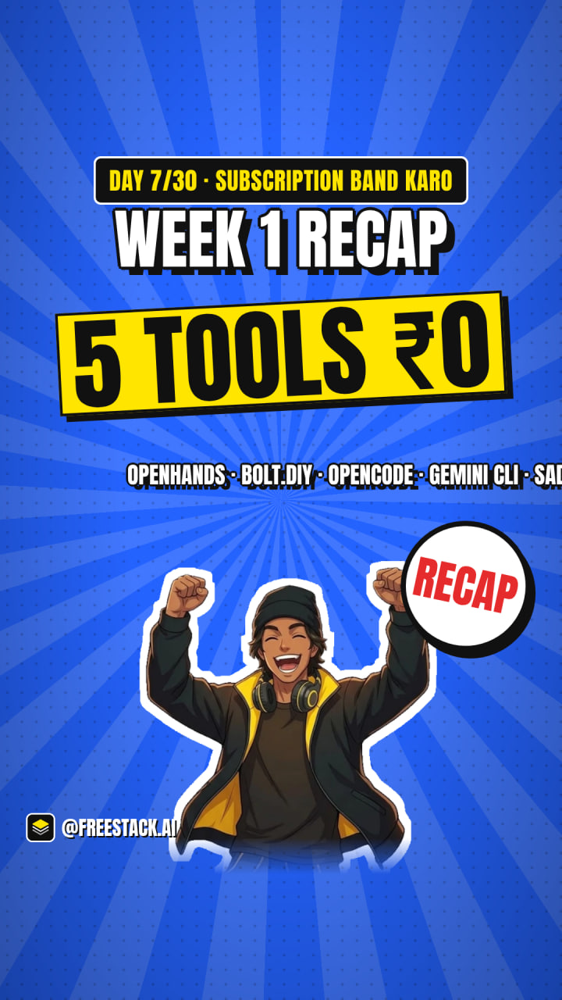
1,611 views"Ek hafte mein 5 mehenge AI tools ke free versions. Kitne yaad hain?"
RecapQuizListSabse chhoti reel (28s). Quiz ne khel bana diya, aur list hone se save hui.
01 · Asli reels
Teardown: kyun chali (2/4)
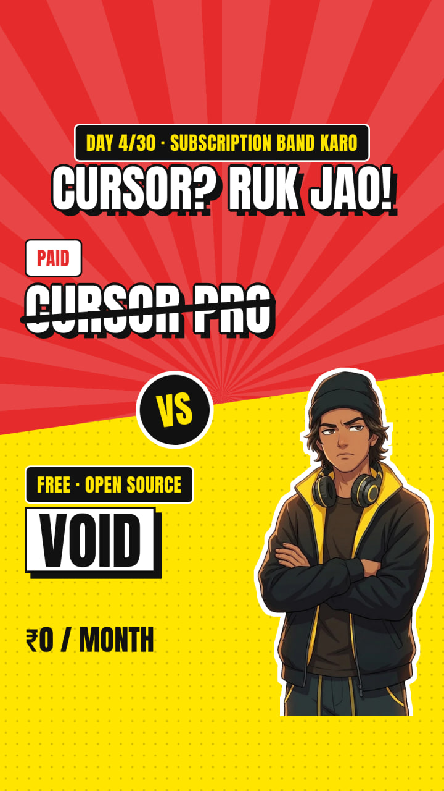
1,593 views"Coding ke liye Cursor ka subscription? Ruk jao."
Ruk jaoPaisaBadi brandJis tool ke log paise dete hain, uska naam + seedha order. Sabse zyada likes (49) isi pe aaye.
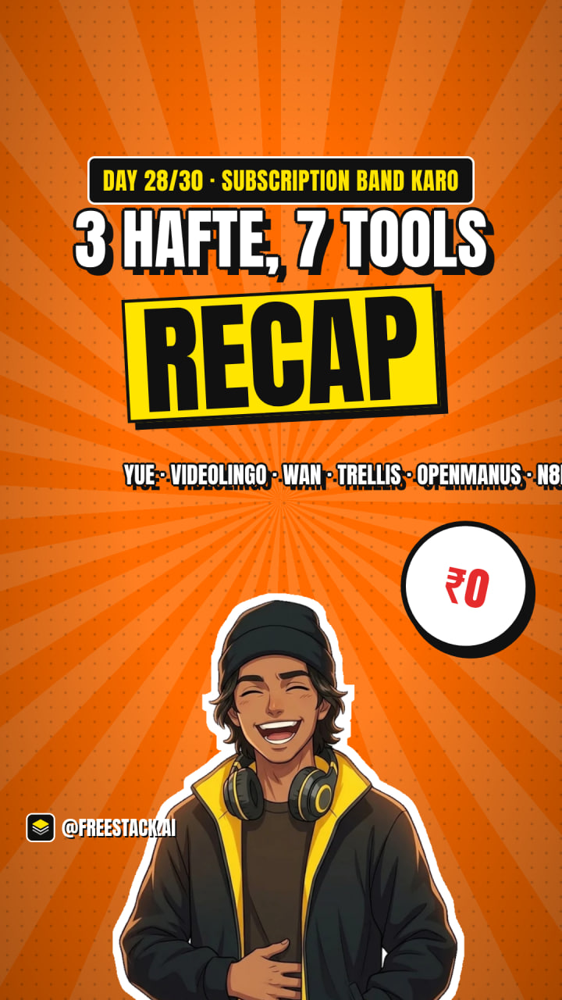
1,434 views"Teen hafton mein itne free versions. Kitne yaad hain?"
RecapQuizDoosra recap, doosri baar top 5. Ye format luck nahi, pattern hai.
01 · Asli reels
Teardown: kyun chali (3/4)
1,182 views"Sirf likho, aur AI video bana dega."
Result pehleWow6 shabd, aur result dimaag mein turant dikh gaya. Samajhne ke liye sochna nahi pada.
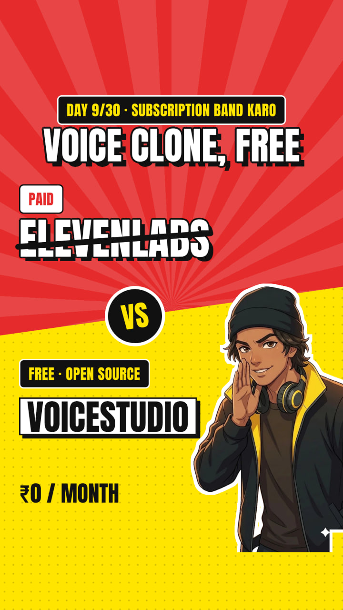
1,102 views"AI voiceover ke liye har mahine paise de rahe ho?"
DardPaisaSawaalCreators ka asli kharcha pakda. Sawaal pe viewer ne mann mein 'haan' bola.
01 · Asli reels
Teardown: kyun chali (4/4)
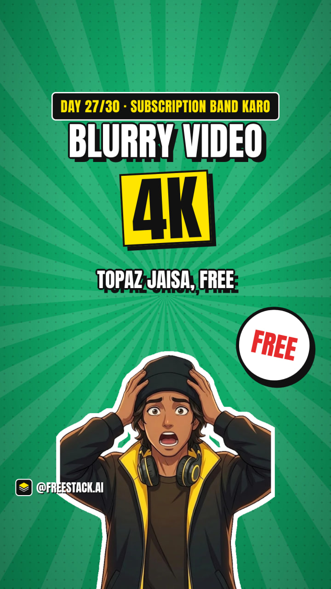
1,093 views"Purani blurry video ko 4K mein badlo, free."
Result pehleEmotionPurani family videos = emotion. Before/after dimaag mein bana.
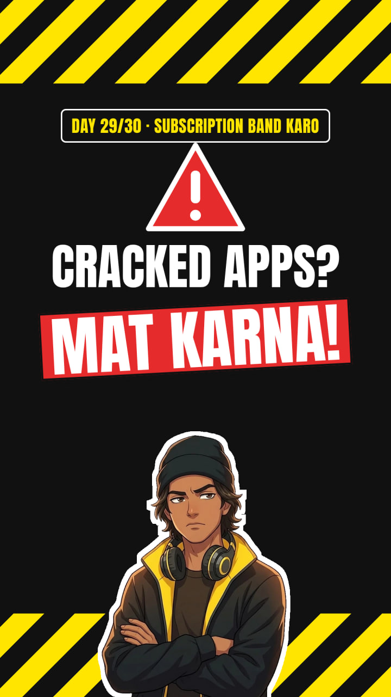
1,040 views"Ye 'free' AI tools sach mein free hain? Ek kadwa sach sun lo."
Kadwa sachTrustKoi tool nahi, sirf ek imaandaar raay. Audience ko imaandaari pasand aayi.
01 · Asli reels
Teardown: kyun flop hui (1/2)
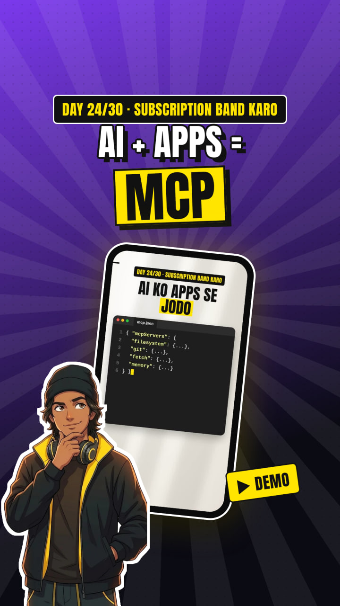
140 views"AI ko apni files, GitHub aur apps se jodo, ek standard tareeke se."
ConfusingJargonNa dard, na result. 'Standard tareeka' kisi ko nahi chahiye.
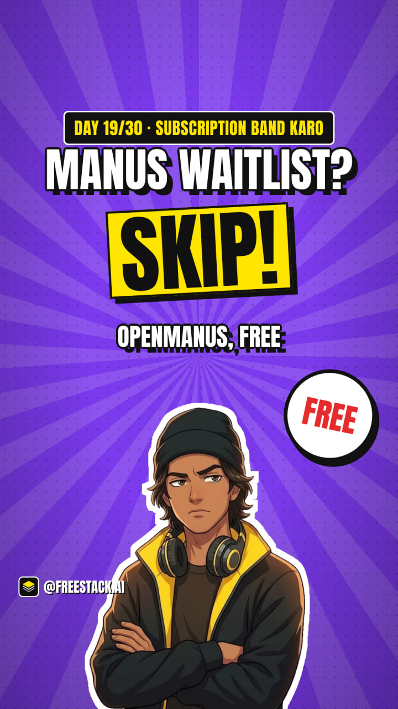
144 views"Manus AI ka waitlist aur credits bhool jao."
Unknown naamMaan liya ki log Manus jaante hain. Nahi jaante the.
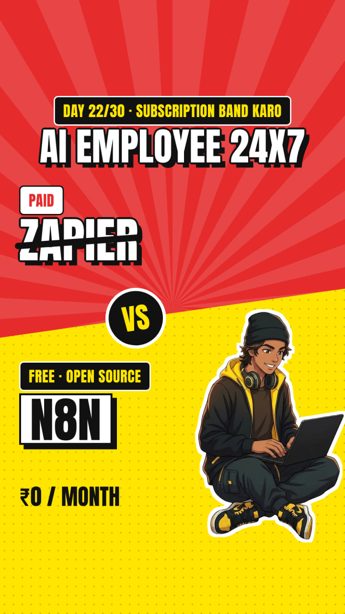
144 views"Ek AI employee, jo kabhi chhutti nahi leta."
VagueGhisa-pitaSunne mein achha, par kya karta hai? Kuch saaf nahi.
01 · Asli reels
Teardown: kyun flop hui (2/2)
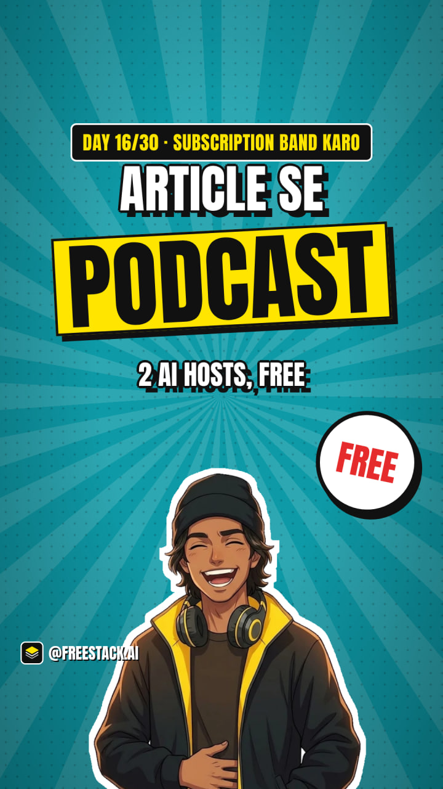
151 views"Koi bhi article, aur do AI hosts uspe podcast karenge."
LambaLow stakesLambi line, aur jis tool ka alternative tha wo pehle se free hai.
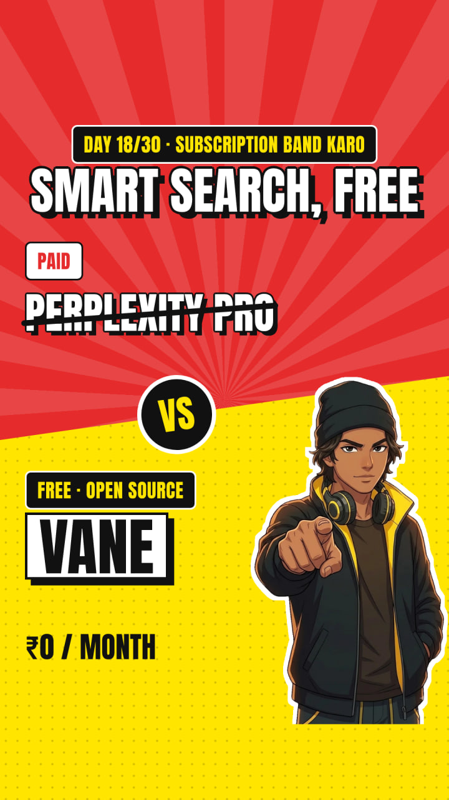
153 views"Google se smart search, jo seedha jawab de."
Feature onlyFeature bataya, dard nahi. Kyun rukun?
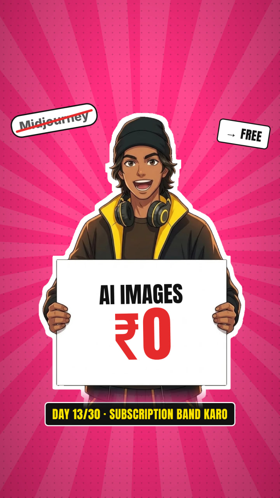
175 views"Midjourney level AI images, zero rupaye mein."
Purani khabarFree AI images ab har phone mein hain. 'Free' ab news nahi.
01 · Pattern
8 winners vs 6 flops: pattern
Jeetne wale hooks ne kiya:
✅ aisi cheez ka naam liya jiske log paise dete hain
✅ viewer ko seedha challenge ya sawaal kiya
✅ quiz/recap ka khel banaya
✅ result ek line mein dikha diya
Flop hooks ne kiya:
❌ sirf feature bataya
❌ anjaan naam liya
❌ jargon ("standard", "protocol")
❌ "free" bola jahan free ab normal hai
Agle pages mein ye pattern ek system mein badla gaya hai, jo kisi bhi niche mein chalega.
02 · Algorithm
Instagram reel ko aage kaise bhejta hai
Step 1: Reel pehle thode logon ko dikhti hai (followers + kuch naye log).
Step 2: Wo log ruke? Poori dekhi? Like kiya? Kisi ko bheji? Agar haan, toh reel naye logon tak jaati hai.
Step 3: Naye log bhi wahi karein, toh aur aage. Yahi "viral" hai.
Instagram ke head Adam Mosseri ne publicly bataya hai ki reels ke sabse bade signals hain: watch time, likes per reach aur sends per reach (DM mein share).
Matlab: hook ka kaam sirf rokna nahi, sahi insaan ko rokna hai, jo poori dekhe aur bheje. Clickbait se log rukte hain, par jaldi bhaagte hain, aur reel wahin ruk jaati hai.
03 · Pehle 3 second
3-Layer Hook: teeno ek hi baat bolein
1. Text (screen)
3–7 bade shabd. Pehle frame pe, 0.0 second se.
2. Aawaz (pehli line)
Wahi baat, bolne ke andaaz mein. "Hi guys" ya intro nahi.
3. Visual
Result, chehre ka reaction, ya kuch hota hua (cup ka crush hona type). Khaali screen nahi.
pastel bg
khaali mockup
mascot 4 sec baad
Hamari galti (data se): hamare covers bahut achhe the: laal-peela, mascot, "₹0". Par reel ka pehla frame halka pastel aur khaali mockup tha. Feed mein log cover nahi, frame 0 dekhte hain. Lesson: cover design ko hi reel ka pehla frame banao.
Doosri galti: har reel ke 2–5 second "Subscription band karo, Day N" bolne mein gaye. Naye viewer ke liye zero value. Series ka naam chhota sa screen pe likho, bolo mat.
04 · Test
Hook Score: 10 mein se 7 se kam? Post mat karo.
| # | Check | Kaise parkhein |
|---|
| 1 | Kam shabd | Magazine headline jaisa. 3 second mein padh lo. |
| 2 | Page se juda | Topic aapke page ka ho, warna clickbait lagega. |
| 3 | Ulti soch | Jo sab maante hain, use hilaye. |
| 4 | Aasaan | Sochna na pade ki matlab kya hai. |
| 5 | Bilkul flat nahi | Thoda dimaag lagaye, warna ignore. |
| 6 | Curiosity | Jawab video ke andar ho, hook mein nahi. |
| 7 | Original | Har jagah dikhne wala hook kaam nahi karta. |
| 8 | Jaana-pehchana + naya | Famous cheez + ek twist (Google + free). |
| 9 | 3-second test | Dost ko 3 second dikhao, wo bata de topic kya hai. |
| 10 | Dard ka hal | Viewer ki asli takleef ka ishaara. |
Framework Brendan Kane ki book Hook Point ke principles se adapt kiya, Hinglish reels ke liye.
05 · Galtiyan
Hook fail hone ke 10 kaaran
| 1 | Bahut lamba: Ek reel jo 60 second ki thi aur hook 2 line ka: median se thoda hi upar. |
| 2 | Confusing: "MCP: Model Context Protocol" → viewer ko pata hi nahi kya hai. 140 views. |
| 3 | Vague: "Ye video aapki zindagi badal degi" → kaise? kyun? |
| 4 | Ghisa-pita: "Wait till the end" sab ne 1,000 baar dekha hai. |
| 5 | Kisi ke liye nahi: "Sabke liye tips" = kisi ke liye nahi. |
| 6 | Purana: Jo trend 2 saal pehle tha. |
| 7 | Maan liya ki interest hai: "Manus ka waitlist bhool jao" → Manus kaun? 144 views. |
| 8 | Jhootha: Promise jo video poora na kare. |
| 9 | Unique nahi: Competitor jaisa hi. |
| 10 | Dikhne mein feeka: Chhota text, kam contrast, khaali screen. |
06 · Typography
Screen pe hook kaise likhein
Rule 1, poora vichaar highlight karo: "Paisa bachao, ameer nahi banoge" ✅. Sirf "Paisa" bold karna galat hai, kyunki akela shabd kuch nahi kehta.
Rule 2, line wahan todo jahan saans lete ho:
"Roz 3 ghante ek reel pe? / Saal ke 1,000 ghante gaye."
Rule 3, ek rang = ek matlab: laal = dard/galti, peela = hal/result. Poori series mein same rakho.
Rule 4, phone safe zone: text upar 15% aur neeche 25% mein mat rakho, wahan Instagram ke buttons aate hain.
Rule 5, 0.0 second: hook text pehle hi frame pe ho. Fade-in, logo ya intro animation mat lagao.
07 · Hook type 1/12
Ruk Jao (Callout)
Seedha order. Dimaag ko 'brake' lagta hai, aur jisko bola gaya wo khud ko pehchaan leta hai.
Template: [Jo kaam log kar rahe hain] ke liye [paise/time] de rahe ho? Ruk jao.
1Coding ke liye Cursor ka subscription? Ruk jao.
2Roz 3 ghante reel edit karte ho? Ruk jao.
3Salary aate hi EMI pe EMI? Ruk jao, pehle ye suno.
⚠️ Dhyaan: Order do, par turant wajah bhi do. Sirf 'Ruk jao' bolke chup mat ho jao.
07 · Hook type 2/12
Kam Log Jaante Hain (Secret)
Andar ki baat sunna sabko pasand hai. 'Mujhe pata hai, tumhe nahi' wali feeling.
Template: [Badi company/insaan] ne [cheez] free de diya, aur bahut kam log jaante hain.
1Google ne apna AI agent free mein de diya, aur bahut kam log jaante hain.
2Toppers revise ek alag tareeke se karte hain. Kam log jaante hain.
3Phone ki ek setting jo aapki battery chupke se kha rahi hai.
⚠️ Dhyaan: Secret sach mein useful ho. Jhoota secret = unfollow.
07 · Hook type 3/12
Kitne Yaad Hain? (Recap/Quiz)
Dimaag ko khel pasand hai. List + quiz = poori dekhi jaati hai aur save hoti hai.
Template: [Time] mein [N] [cheezein]. Kitni yaad hain?
1Ek hafte mein 5 mehenge AI tools ke free versions. Kitne yaad hain?
2Is mahine ke 7 money rules. Kitne follow kiye?
310 English words jo is hafte seekhe. Kitne yaad hain?
⚠️ Dhyaan: Hamare data mein dono recap reels top 5 mein thi. Har 7 din mein ek recap daalo.
07 · Hook type 4/12
Kadwa Sach (Contrarian)
Imaandari trust banati hai, aur ulti baat scroll rokti hai.
Template: Kadwa sach: [jo sab maante hain] galat hai.
1Ye 'free' AI tools sach mein free hain? Ek kadwa sach sun lo.
2Kadwa sach: aap busy nahi ho, distracted ho.
3Kadwa sach: jaldi uthne se koi ameer nahi banta.
⚠️ Dhyaan: Sach ka saboot do (example, number). Sirf shock ke liye mat bolo.
07 · Hook type 5/12
Paisa/Time ka Nuksaan (Loss)
Insaan paane se zyada khone se darta hai. Nuksaan dikhao, log rukte hain.
Template: [Kaam] pe [time/paisa]? Saal ka [bada number] gaya.
1Roz 3 ghante ek reel pe? Saal ke 1,000 ghante gaye.
2Har mahine ₹500 ke subscriptions? Saal ke ₹6,000.
3Roz 2 ghante phone pe scroll? Saal ke 30 din.
⚠️ Dhyaan: Number sach ho aur hisaab simple ho, taaki viewer khud check kar sake.
07 · Hook type 6/12
Result Pehle (Proof first)
Dekhna yakeen hai. Pehle result dikhao, phir tareeka.
Template: [Result ka visual]. Ye [tareeka] se hua.
1Purani blurry video ko 4K mein badlo, free.
2Ye reel bina camera, bina mic bani hai. Guess karo kaise?
3Ek line likhi, poori website ready.
⚠️ Dhyaan: Visual result frame 0 pe ho. Hamari 4K wali reel (1,093 views) isi wajah se chali.
07 · Hook type 7/12
Myth Todo
Jo sab maante hain, use galat dikhana instant contrast deta hai.
Template: Sabse bada jhooth: '[myth]'.
1Sabse bada jhooth: 'pehle editing seekho, phir page shuru karo.'
2Myth: zyada padhoge toh zyada marks.
3Myth: paisa bachane se ameer bante hain.
⚠️ Dhyaan: Myth sach mein log maante hon. Banawati myth mat todo.
07 · Hook type 8/12
Identity Callout
Insaan apne baare mein sunna pasand karta hai. Ek group ko naam se bulao.
Template: Agar aap [age/role] ho, toh [ye] abhi suno.
1Agar aap 20s mein ho, toh ye 3 galtiyan abhi rok do.
2Naya page shuru kiya hai? Ye 5 cheezein pehle din karo.
3Hostel mein rehte ho? Ye 4 paise bachane ki tricks.
⚠️ Dhyaan: Group chhota aur saaf ho. 'Sab log' identity nahi hai.
07 · Hook type 9/12
Comparison
Do raaste dikhao. Viewer khud ko ek side mein dekhta hai aur aakhir tak rukta hai.
Template: [A] vs [B]: [N] din baad farak dekho.
1Do creators, same talent. Ek roz post karta hai, ek mood pe. 90 din baad kaun aage?
2₹15,000 ka editor vs ₹67 ki reel.
3Topper vs average student: farak padhai mein nahi.
⚠️ Dhyaan: Dono sides imaandari se dikhao. Ek ko bewakoof mat banao.
07 · Hook type 10/12
Story Drop-in
Kahani ke beech se shuru karo. Dimaag ko 'aage kya hua' jaanna hai.
Template: [Insaan] ne [ajeeb kaam] kiya. Phir [twist].
1Usne naukri chhodi, sab ne pagal kaha. 6 mahine baad koi nahi hasa.
2Ek chai wale ne mujhe business ka sabse bada lesson diya.
3Ek saal tak zero posts. Phir ek din ye notice kiya.
⚠️ Dhyaan: Kahani ka lesson viewer ke kaam ka ho, sirf entertainment nahi.
07 · Hook type 11/12
Challenge / Test
Viewer ko khel mein shamil karo. Jawab comment mein aata hai, aur comments reach badhate hain.
Template: [Test/sawaal]. Sirf [x%] log sahi karte hain.
1Ek aawaz asli hai, ek AI. Pehchaan ke dikhao.
2In 3 mein se aap kaun ho? Comment karo.
3Ye 30-second test karo: aapka focus kitna hai?
⚠️ Dhyaan: % ya stat jhootha mat banao. 'Zyada log galat karte hain' bhi kaafi hai.
07 · Hook type 12/12
Naya/Abhi (Newness)
Naya cheez = 'mujhe pehle pata hona chahiye'.
Template: [Kal/is hafte] [cheez] aaya hai, aur ye [fayda].
1Instagram ne ek naya feature diya hai, creators ke liye kaam ka.
2Is hafte ek naya free AI tool aaya jo [kaam] karta hai.
3UPI ka naya rule, ye aapko pata hona chahiye.
⚠️ Dhyaan: Sach mein naya ho, aur fact check karo. Galat 'news' se trust jaata hai.
08 · Rewrites
Before → After 1–7
❌ PEHLEAaj main aapko ek AI tool ke baare mein bataunga.
✅ BAAD MEINYe free AI tool aapke 3 ghante bachata hai. Roz.
❌ PEHLEMCP ek open standard hai.
✅ BAAD MEINAI ko apne phone ke apps chalane do. Ek setting se.
❌ PEHLEEk AI employee jo kabhi chhutti nahi leta.
✅ BAAD MEINEmail padhna, reply likhna, sheet bharna. Ab AI karega, free.
❌ PEHLEHello guys, welcome back!
✅ BAAD MEINRuko! Ye galti aap roz karte ho.
❌ PEHLEMotivation chahiye?
✅ BAAD MEINAap aalsi nahi ho. Aapka plan galat hai.
❌ PEHLE5 tips for students
✅ BAAD MEINExam mein sab bhool jaate ho? Ye 1 tareeka badlo.
❌ PEHLEPaise bachane ke tips
✅ BAAD MEINSalary 20 tareekh tak khatam? Galti yahan hai.
08 · Rewrites
Before → After 8–14
❌ PEHLEYe video zaroor dekhna
✅ BAAD MEINAgar aap 20s mein ho, toh ye 3 cheezein abhi rok do.
❌ PEHLEInteresting facts
✅ BAAD MEINAapki aankh har din ek cheez nahi dekh paati. Kya?
❌ PEHLEShayari part 12
✅ BAAD MEINJo log chup rehte hain, wo sabse zyada sochte hain.
❌ PEHLEEnglish improve karo
✅ BAAD MEINYe 5 English lines bolte hi log aapko smart samjhenge.
❌ PEHLEBusiness ideas 2026
✅ BAAD MEIN₹5,000 se shuru hone wale 3 kaam, jo ghar se ho sakte hain.
❌ PEHLEHealth tips
✅ BAAD MEINSubah uthte hi thakaan? Ye 1 aadat check karo.
❌ PEHLEEk kahani suniye
✅ BAAD MEINSab hans rahe the. 6 mahine baad koi nahi hasa.
08 · Rewrites
Before → After 15–20
❌ PEHLEProductivity hacks
✅ BAAD MEINRoz 2 ghante bachane ka ek boring sa tareeka.
❌ PEHLECareer advice
✅ BAAD MEINResume mein ye 1 line hai? Isliye call nahi aa rahi.
❌ PEHLENew AI update
✅ BAAD MEINGoogle ne chupke se ek naya free tool diya hai.
❌ PEHLECricket facts
✅ BAAD MEINYe record shayad kabhi nahi tootega. Kaunsa?
❌ PEHLERelationship tips
✅ BAAD MEINYe 3 baatein bolte hi ladai khatam.
❌ PEHLEPsychology facts
✅ BAAD MEINJo insaan ye karta hai, wo jhooth bol raha hai.
09 · Niche bank
Motivation: 10 ready hooks
1Aap aalsi nahi ho. Aapka plan galat hai.
2Kadwa sach: koi aapko bachane nahi aayega.
3Jo aaj kar rahe ho, wahi 5 saal baad ban jaoge.
4Mood ka intezaar karoge toh kabhi shuru nahi hoga.
5Log aapko judge nahi kar rahe. Wo apne mein busy hain.
620s mein ye 3 galtiyan zindagi bhar ka nuksaan hain.
7Har din 1% better. 1 saal baad hisaab dekho.
8Jis din haarne ka darr gaya, us din jeet shuru.
9Aapki comfort zone ek sundar si jail hai.
10Discipline ka sabse aasaan tareeka, jo koi nahi batata.
09 · Niche bank
Facts: 10 ready hooks
11Aapka dimaag raat ko ek ajeeb kaam karta hai.
12Ye cheez aap roz khaate ho, par asal mein phal nahi hai.
13Duniya ka ek desh jahan suraj 2 mahine nahi doobta.
14Aapki aankh ek rang kabhi nahi dekh sakti.
15Ye record shayad kabhi nahi tootega.
16Shahad kabhi kharab nahi hota. Kyun?
17Aap roz itna paani peete ho bina jaane.
18Ek ghanti jisne poora itihaas badal diya.
19Sach ya jhooth: insaan ka DNA kele se milta hai?
20Ye shabd aap roz bolte ho, par matlab nahi pata.
09 · Niche bank
Money tips: 10 ready hooks
21Salary 20 tareekh tak khatam? Galti yahan hai.
22Har mahine ₹500 ke subscriptions = saal ke ₹6,000.
23Credit card ki ye 1 galti, aur interest ka jaal.
24Paisa bachao, ameer nahi banoge. Ye bhi karo.
25Pehli salary pe ye 3 kaam karo.
26Ameer log chupke se ye 1 cheez karte hain.
27UPI pe ye setting abhi on karo.
28Do log, same salary. 10 saal baad ek ameer kyun?
29₹100 roz = saal ke ₹36,500. Kahan ja rahe hain?
30Bank ye baat aapse kabhi nahi kahega.
09 · Niche bank
Study tips: 10 ready hooks
31Padhte ho, par exam mein bhool jaate ho? Ye badlo.
32Toppers revise ek alag tareeke se karte hain.
33Raat ko padhna galat hai? Sach sun lo.
341 ghante ki padhai 20 minute mein.
35Exam se 1 din pehle ye galti mat karna.
36Phone saath rakh ke padhte ho? Ye suno.
37Ye 3 sawaal har chapter ke baad khud se poocho.
38Yaad karne ka nahi, bhoolne ka system samjho.
39Topper vs average: farak ghanton mein nahi hai.
40Notes banana time waste hai? Kadwa sach.
09 · Niche bank
AI tools: 10 ready hooks
41Google ne chupke se ek naya free tool diya hai.
42ChatGPT ki ye setting 90% log on nahi karte.
43Ye free AI tool aapke 3 ghante bachata hai.
44Paid AI tool ka free version, phone pe.
45Ek photo do, aur wo bolne lagegi.
46Ye 'free' AI tools sach mein free hain?
47AI se ye kaam karwao, boss khush.
48Ek prompt, aur poori presentation ready.
49AI jo aapka phone khud chalata hai.
50Ye AI tool students ke liye cheat code hai.
09 · Niche bank
Shayari / quotes: 10 ready hooks
51Jo log chup rehte hain, wo sabse zyada sochte hain.
52Kuch log yaadein nahi, sabak ban jaate hain.
53Maa ki ek baat jo ab samajh aayi.
54Dosti ki ek line, jo dil pe lagegi.
55Raat ke 2 baje wali soch.
56Jise khona nahi chahte, use ye kabhi mat kehna.
57Waqt sab badal deta hai. Ye bhi.
58Kuch rishte shor nahi karte, bas nibhaate hain.
59Akela hona aur tanha hona alag hai.
60Ek line jo aapke kisi khaas ko bhejni chahiye.
09 · Niche bank
Stories: 10 ready hooks
61Usne naukri chhodi, sab ne pagal kaha. Phir ye hua.
62Ek chai wale ne mujhe business sikhaya.
63Ek message ne uska poora saal badal diya.
64100 baar haara. 101vi baar kya hua?
65Teacher ka ek sawaal, jiska jawab koi nahi de paya.
66Ek ghadi ki kahani jo 50 saal se ruki hai.
67Raja ne ek ajeeb hukm diya.
68Ek galti jisne company dooba di.
69Ek ladka, ek sapna, aur ek bus ticket.
70Sab hans rahe the. 6 mahine baad koi nahi hasa.
10 · Script
Hook ke baad kya? A.R.C.S.
A, Ask: aisa sawaal jiska jawab "haan" ho. "Roz post karna chahte ho, par time nahi?"
R, Reveal: "main bhi wahin tha." "Mujhe bhi ek reel mein 3 ghante lagte the."
C, Call out: wo discovery jisne badla. "Phir maine script se reel banane ka system banaya."
S, Send: ek saaf action. "Comment karo REEL, system bhej dunga."
Ye copywriter Craig Clemens ka "Impact Arcs" formula hai (Hook Point book mein bataya gaya), yahan 30-second Hinglish reel ke liye. Ek sentence, ek reel, ya poori presentation, teeno mein chalta hai.
11 · System
Testing aur Double Down
1. Har idea ke 3 hooks likho. Best wala post karo, baaki 2 "Trial Reels" mein test karo (Instagram ka feature jo pehle non-followers ko dikhata hai).
2. 48 ghante baad Insights dekho: views, skip rate / 3-second hold, average watch time, shares. Kisi ek reel pe nahi, 5 reels ke average pe faisla lo.
3. Double down rule: koi reel aapke median se 2× ya zyada chale, toh agle 7 din mein usi idea ke 3 naye versions banao: naya hook, nayi example, naya angle. Hamare data mein recap 2 baar chala, dono baar top 5 mein.
4. Flop ko bhi padho: 3 sabse kam views wali reels ka hook Hook Score pe check karo. Jo point fail hua, wahi agli baar theek karo.
12 · Practice
7 din ka hook practice
| Din 1 | Ad Library aur top creators se 20 achhe hooks copy karke ek note mein rakho (sirf seekhne ke liye). |
| Din 2 | Har hook ka type pehchano (12 types mein se). Kaunsa type aapke niche mein sabse zyada hai? |
| Din 3 | 5 flop reels dhoondho aur Hook Score se fail point likho. |
| Din 4 | Apne niche ke 3 topics pe 3-3 hooks likho (9 total). |
| Din 5 | Har hook ko 3-second dost-test karo. Top 3 rakho. |
| Din 6 | Top 3 ke saath reels banao. Frame 0 = hook text + visual. |
| Din 7 | Insights dekho, winner chuno, double down shuru. |
Pehle copy karke seekho, phir apna banao. Kisi ka hook as-it-is apne naam pe mat chalao: wo kaam nahi karta aur trust bhi todta hai.
Shortcut
Hooks ready. Reels banane ka time nahi?
Aap niche aur script do. Hum ready-to-post typography reels banate hain: frame 0 pe hook, bold text, animation aur voice ke saath.
5 reels: ₹199. Trial, 72 ghante mein delivery.
30 reels: ₹1,999. Poore mahine ka content + calendar.
Instagram pe @freestack.ai ke bio link se order karo.